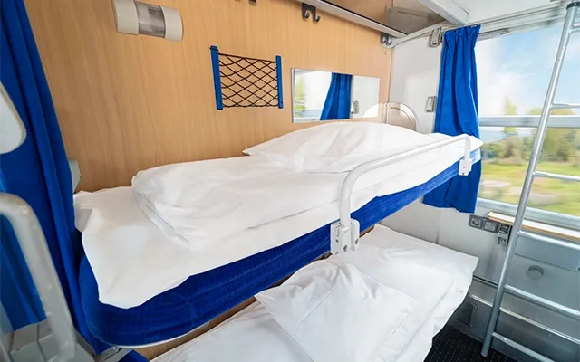

Що це за вагон
Купейний вагон поділений на окремі відсіки з дверима, що дозволяє їхати невеликою групою або родиною. Кожне купе має 4 спальних місця та простір для ручної поклажі.
Формат підходить для нічних маршрутів, коли важлива можливість відпочити, не перебуваючи у відкритому салоні.
Базові зручності
- Закриті 4-місні купе з дверима
- Комплект постільної білизни на рейс
- Місця для валіз та ручної поклажі
- Доступ до питної води та сервісної зони провідника
Кому підійде
Пасажирам, які їдуть вночі на середні та великі відстані й хочуть поєднати прийнятну вартість з базовою приватністю під час сну.
← Повернутися до типів вагонів